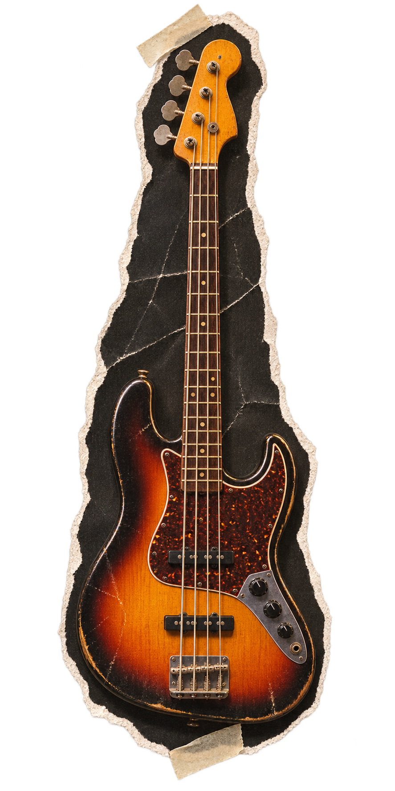
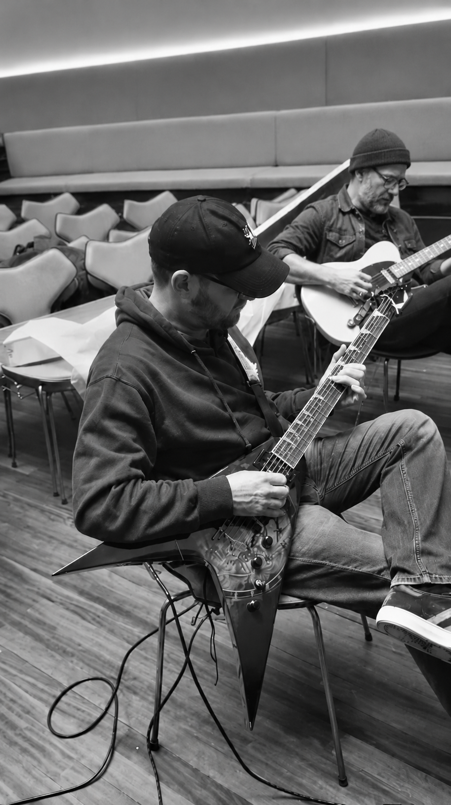

If nobody judged me… I would…
. Small handwritten musical notes and an arrow on the notebook paper.
. Small handwritten musical notes and an arrow on the notebook paper.

Lyrics by Paul
We've got the bass in your face
We've got the drums and you can hum
We've got guitar, that's what you need
Clap your hands and make a band!
↺ Repeat verse ×1
We've got the music that makes you tick
Makes us happy and that's the trick
↳ Back to verse ×2
We've got the music that makes you tick
Makes us happy and that's the trick
That's the trick
That's the trick

And then Paul
started singing…
We had a groove going, and Paul found the words to go with it. A bit of bass, some drums, a guitar or two — and before we knew it, we had a song. Nothing complicated. Just people making music, having a laugh and seeing where it takes us.
Hear how it turned out…
That's the trick!
Local draft · permissions pending for spread two
Select a handwritten fragment to look closer.